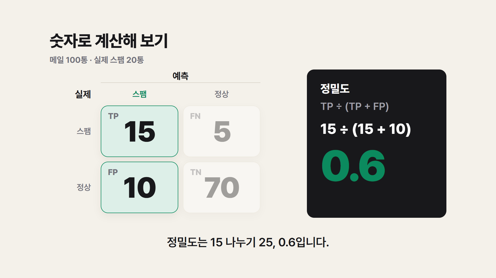
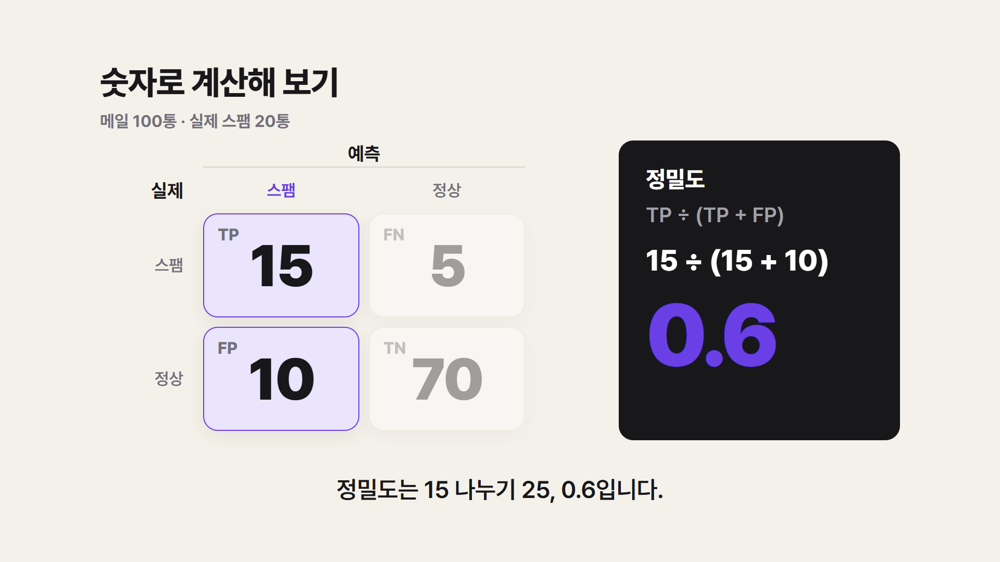
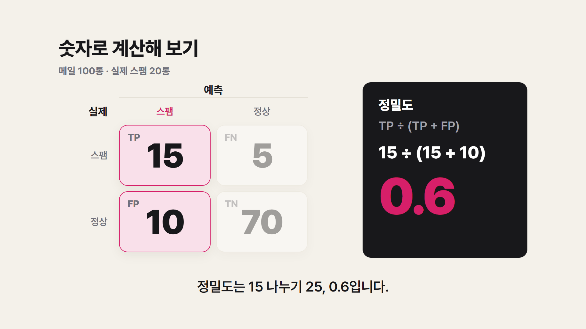
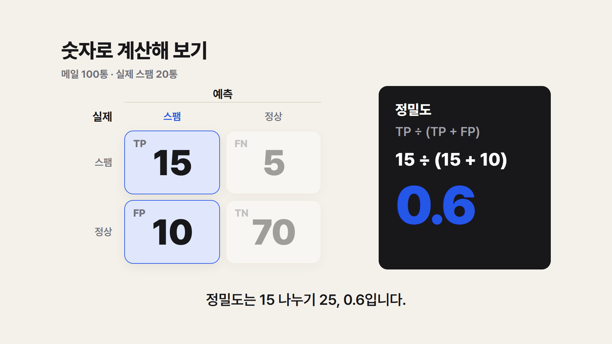
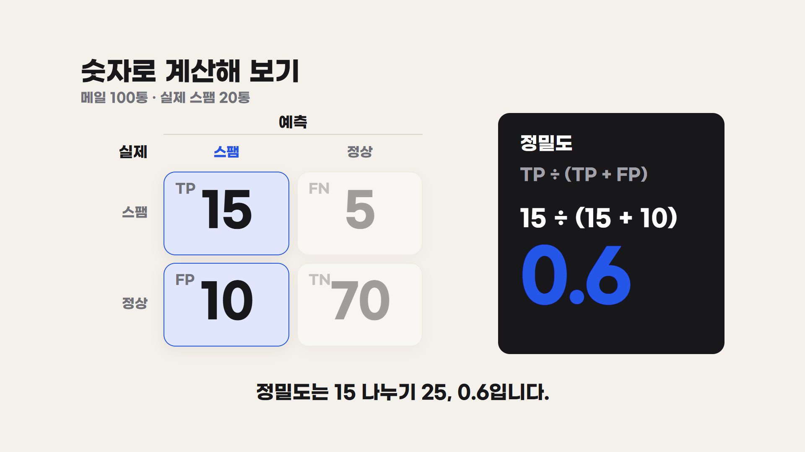
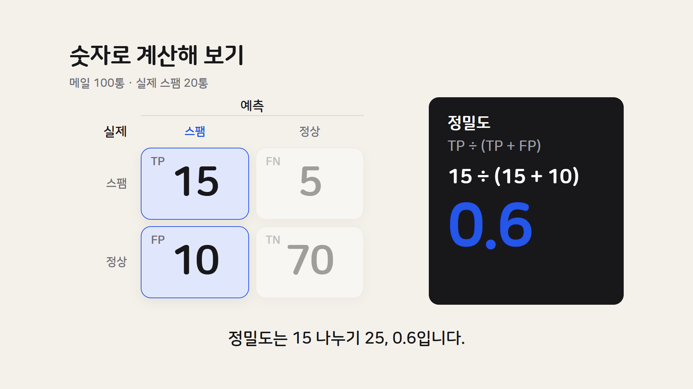

색·글꼴 비교 — 6장 계산 장면
같은 장면에서 강조색과 글꼴만 바꿨습니다. 색은 표의 강조 칸, ‘스팸’ 머리글, 결과 숫자 0.6에 들어갑니다. 배경(아이보리)과 글자색은 그대로 두었습니다.
강조색 4가지 (글꼴은 프리텐다드)

A. 코발트 블루
차분하고 믿음직한 느낌. 공부 채널에서 가장 무난한 선택입니다.

B. 에메랄드 그린
‘정답·합격’ 느낌이 나고 눈이 편합니다. 자격증 채널과 잘 어울립니다.

C. 바이올렛
개성이 뚜렷합니다. 다만 어두운 수식 카드 위에서는 조금 덜 또렷합니다.

D. 라즈베리
가장 눈에 띕니다. 썸네일에서 힘이 세지만 오래 보면 다소 강할 수 있습니다.
글꼴 4가지 (강조색은 코발트 블루로 고정)

1. 프리텐다드 (지금)
반듯하고 중립적입니다. 어디에나 무난하지만 개성은 약합니다. 무료(OFL).
2. 페이퍼로지
기하학적이고 세련됐습니다. 숫자가 둥글고 크게 보이고, 굵기가 9단계라 쓰기 편합니다. 무료(OFL).

3. G마켓 산스
굵고 단단해서 유튜브 썸네일에 자주 쓰입니다. 굵기가 3단계뿐이라 자막까지 굵게 나옵니다. 무료 배포.

4. 나눔스퀘어 라운드
글자 끝이 둥글어 부드럽고 친근합니다. 굵기 단계가 적어 자막이 가늘게 보입니다. 무료(OFL).